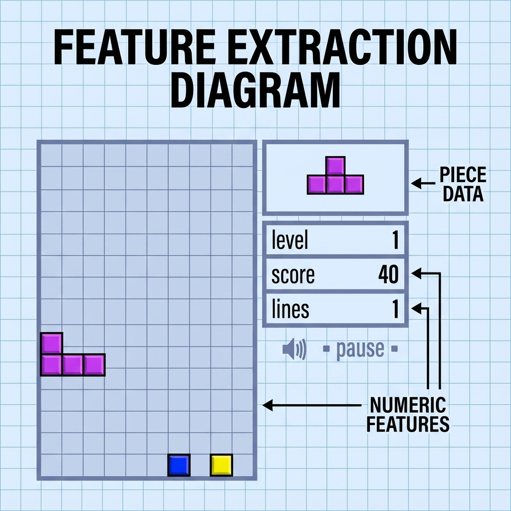

1. Infinite Horizon Stochastic DP Problem
Problem Statement
We aim to minimize the total cost over an infinite number of stages, given by:
\[ J_\pi(x_0) = \lim_{N \to \infty} E_{{w_k}, \: k=0,1,\dots} \left\{ \sum_{k=0}^{N-1} \alpha^k g(x_k, \mu_k(x_k), w_k) \right\} \]- \( J_\pi(x_0) \) is the cost associated with initial state \( x_0 \) and policy \( \pi = \{\mu_0, \mu_1, \dots\} \).
- \( \alpha \) is a discount factor in the interval \( (0, 1] \).
- System equation: \( x_{k+1} = f(x_k, u_k, w_k) \).
- Stochastic disturbances \( w_k \) have a common probability distribution \( P(\cdot | x_k, u_k) \).
2. Value Iteration (VI)
How do we solve this? We can think of it as the limit of finite horizon problems.
The Algorithm
Let \( J_N(x) \) denote the optimal cost of an \( N \)-stage problem. The Value Iteration algorithm generates this cost iteratively:
\[ J_{k+1}(x) = \min_{u \in U(x)} E_w \left\{ g(x, u, w) + \alpha J_k (f(x, u, w)) \right\}, \quad k = 0, 1, \dots \]Starting from \( J_0(x) = 0 \).
Optimal Cost \( J^* \)
The optimal infinite horizon cost is the limit:
\[ J^*(x) = \lim_{N \to \infty} J_N(x) \]It satisfies the famous Bellman Equation:
\[ J^*(x) = \min_{u \in U(x)} E_w \left\{ g(x, u, w) + \alpha J^* (f(x, u, w)) \right\} \]3. Policy Iteration (PI)
Can we iterate on policies instead of values? Yes! This forms the foundation of Reinforcement Learning.
1. Policy Evaluation
Compute cost \( J_\mu \) of current policy \( \mu \) by solving:
\[ J_\mu(x) = E_w \{ g(x, \mu(x), w) + \alpha J_\mu(f(x, \mu(x), w)) \} \]Can be done via Monte Carlo simulation.
2. Policy Improvement
Compute improved policy \( \tilde{\mu} \) via one-step lookahead:
\[ \tilde{\mu}(x) \in \text{arg min}_{u} E_w \{ g(x, u, w) + \alpha J_\mu(f(x, u, w)) \} \]Theorem: \( J_{\tilde{\mu}}(x) \leq J_\mu(x) \).
4. Approximation & Lookahead
In practice, we can't solve Bellman's equation exactly for large state spaces. We use approximations.
One-step vs Multistep Lookahead
Approximation in Value Space
Feature Extraction Example
For complex games like Tetris or Atari, we extract features from the state to approximate the cost.
5. Test Your Understanding
1. What is the Bellman Equation for infinite horizon problems?
2. In Policy Iteration, the "Policy Improvement" step:
🔍 Spot the Mistake!
Scenario: A student claims:
"In the infinite horizon problem, the discount factor \( \alpha \) can be any positive number, i.e., \( \alpha > 0 \)."